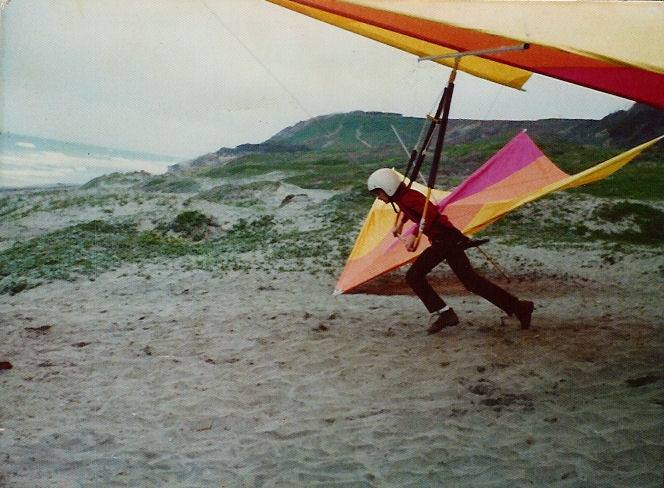
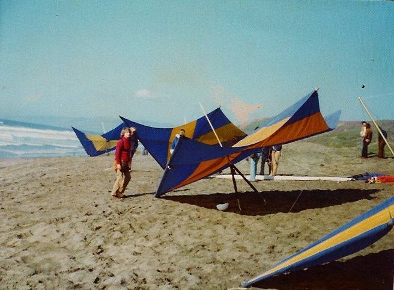

Thomas Low
We all started somewhere... this was my first "factory made" glider back in 1974, down in the training bowl below Funston. 13 years old, and teaching myself after a two lesson package ($27.50).

Thomas Low
This was my first Hang Gliding lesson, down in the training bowl. All Chandelle gliders were blue and gold. I'm the kid with the long blonde hair and the red sweater. January 1974. We all flew "seated"